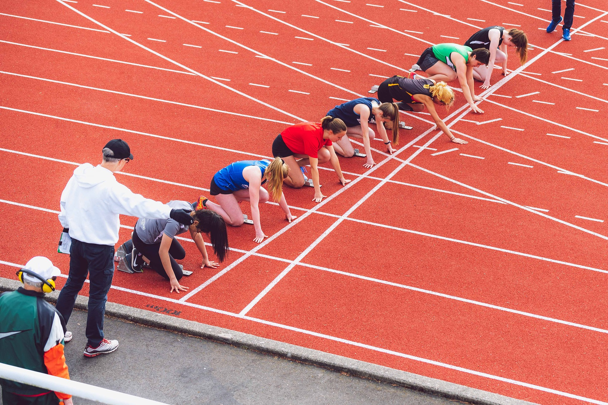
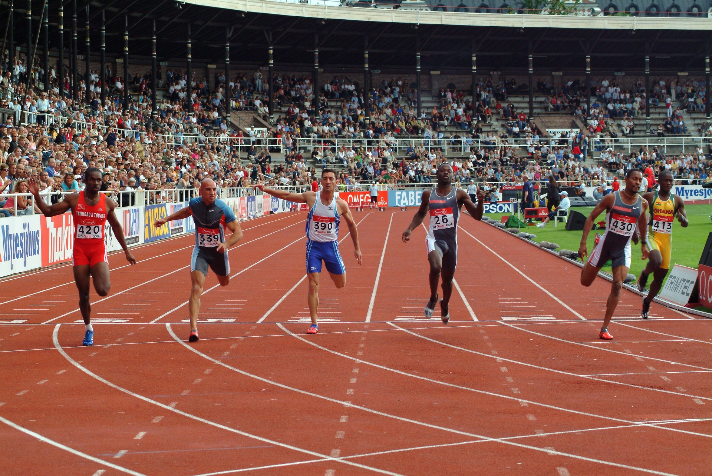

Oduvijek sam volio trčeče utrke i trčanje. Nažalost, ne bavim se sportom, ali sam do prije par godina trenirao nogomet u seoskome klubu (kompromis za manjak atletskih klubova u selima). Prestao sam se baviti nogometom kada sam zadobio ozljedu koljena i nisam mogao trčati godinu dana.